透视学习 01——视圈
在之前的学习中，知道：
- 确定了画布后，确定消失点和画布的关系就能决定画面的焦距
- 物体的消失点和物体的位置无关，只和物体的旋转角度相关
- 所谓的“空间压缩感”，实际上和焦距无关，只和物体和镜头的距离相关
- 接上条，长焦镜头的画面，实际上只是从短焦镜头画面裁切过来的，而短焦镜头的画面，也是从“整个画面”去裁切出来的
在这之前，一直都是先定画布或者物体，然后尝试研究物体的消失点和物体大小或画布大小的不同关系所对应的不同焦距，然后尝试总结规律。这个是很有问题的：变量太多了，物体，画布；要研究只能研究出来物体在这个尺寸的画布中占特定大小时，它看上去是 XX 焦距的。
因此，这个方法得到的结论只能是经验性质的，无法成为推导的锚点，作为程序员，作为工程师，这个太令人难受了。迫切需要一种方法，一种只有一个变量的方法，去能让人决定画面的焦距，并绘制正确的透视图，实际上，透视学中正好有这样一个工具，称为视圈。
在研究 FOV 和消失点的关系时，研究发现，90 度的水平 FOV 时，沿 Z 轴旋转 45 度的立方体的消失点正好在画布边缘，进一步研究得到一个公式：假设水平 FOV 为 $\theta$ ，计算能够发现，对于一个 Z 轴旋转 45 度的立方体，有
这个公式看起来好像平淡无奇，但是且慢！注意到这里的变量“消失点到画布中心的距离”，它不正是 90 度的水平 FOV 时，画布的宽度吗？？这证明，通过特定 FOV，能得到其它 FOV 的大小，考虑到这里还没有引入画布，所以这是一个很好的出发点。
这启发，可以忘记画布，而是以一个特定的 FOV 为锚点，并使用这个 FOV，去得到其它的 FOV（包括画布），即其他的 FOV 在画面中所占的范围。实际上，以 90 度的 FOV 为锚点进行研究，因为 90 度是直角，也是矩形的内角，它能够方便研究，即使在摄影学中这个 FOV 不常见。
先提出这种操作的优点：
- 它足够精确，在已知 45 度的两个消失点时，根据它们，然后根据物体的其中一个消失点，能唯一确认物体的另一个消失点（在此前，写出的公式中必须要牵扯到物体自身的旋转的角度，这显然是无法实践的）
- 它能够处理两点透视中不同方向线条的长度（当然，一点透视是无法操作的）
- 画布能任意安排，无论是画长焦还是画短焦，因为不同的焦距（FOV）的画面都能从这个焦距（FOV）得到；在有了根据 90 度 FOV 确定画布（以及焦距）的经验后，就能够在脑子里反向地根据画布去得到它在 90 度 FOV 中所占的大小，即通过画布上的物体去感受焦距。
但是，在实际使用的时候，使用 60 度的 FOV，因为 60 度的 FOV 对应的焦距更符合人眼习惯，而且它也足够方便计算。
视圈
已经决定了 90 度的 FOV，但注意到这个 FOV 是水平 FOV，希望尽量的广泛，那就让垂直的 FOV 也是 90 度好了，但为何要局限于矩形？直接让任何方向的 FOV 均为 90 度就好了，也就是说构造一个圆（其实没必要），管这时候的这玩意儿叫视圈，具体的说，是 90 度视圈。
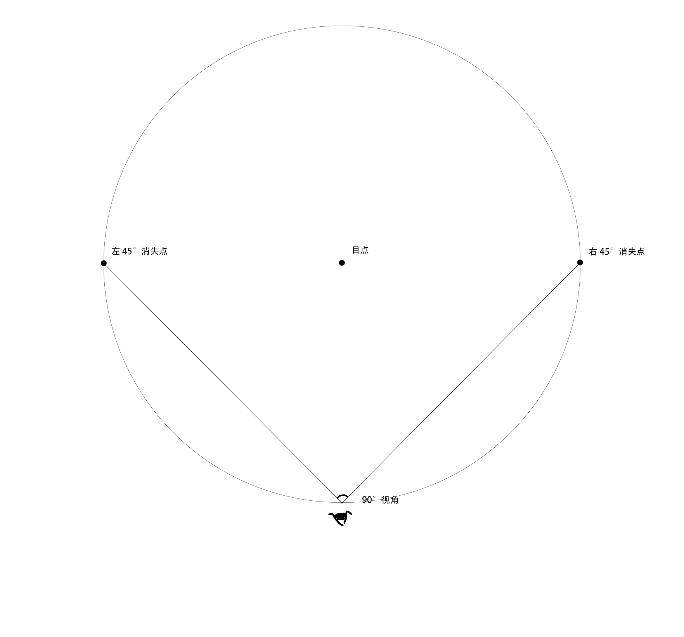
注意，视圈是画在“整个画面”上的。
这里最下方绘制一个眼睛，它是怎么来的？回忆是如何得到 90 度视圈的——沿 Z 轴旋转 45 度一个立方体，然后找它的两个消失点。这时候，想象直面画布，左手指向左消失点（因此左手和左侧面的顶线，底线是平行的），右手指向右消失点，然后在中间放置画布；绘制这时候的俯视图：
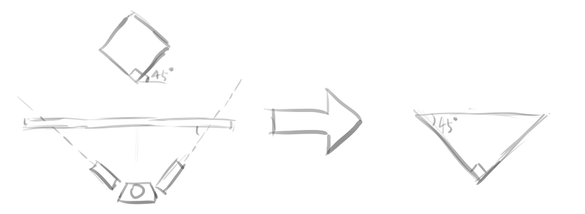
容易发现，这时候得到的是一个等腰直角三角形，等腰直角三角形有一个很好的性质——这三个点在一个圆上，而且斜边是直径，实际上也就是说，都在 90 度的视圈上，那可以把这张俯视图就放到视圈中，因此就得到了这个眼睛的位置。它实际上是可以安排到其他位置上的，后面研究三点透视时会看到。
那再考虑 60 度的 FOV 呢？再次诉诸俯视图的这个心智模型，但这次建立在 90 度 FOV 的基础上：
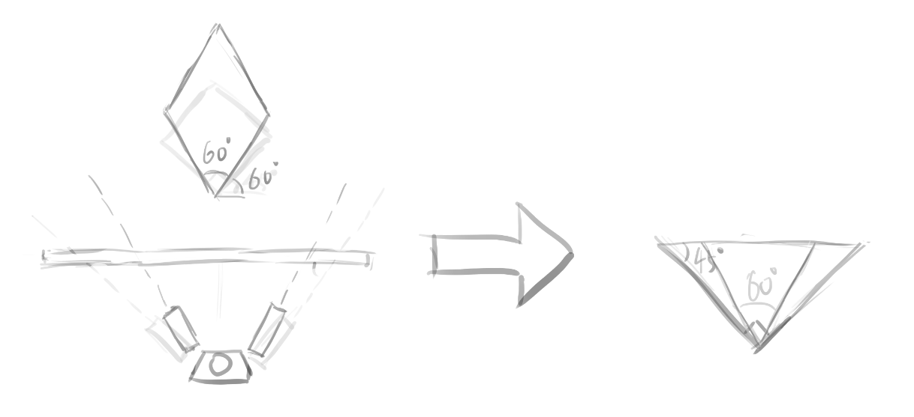
然后，把这个覆盖到 90 度视圈上，得到 60 度视圈：
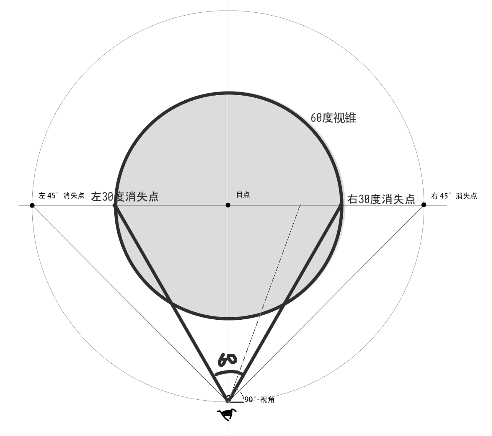
关于这里把俯视图覆盖到视圈上这个说法，美术卷《透视》一书中也是做了相同的操作，但是它的出发点是不同的，它是直接把立体的东西为了方便作图而画到平面上。
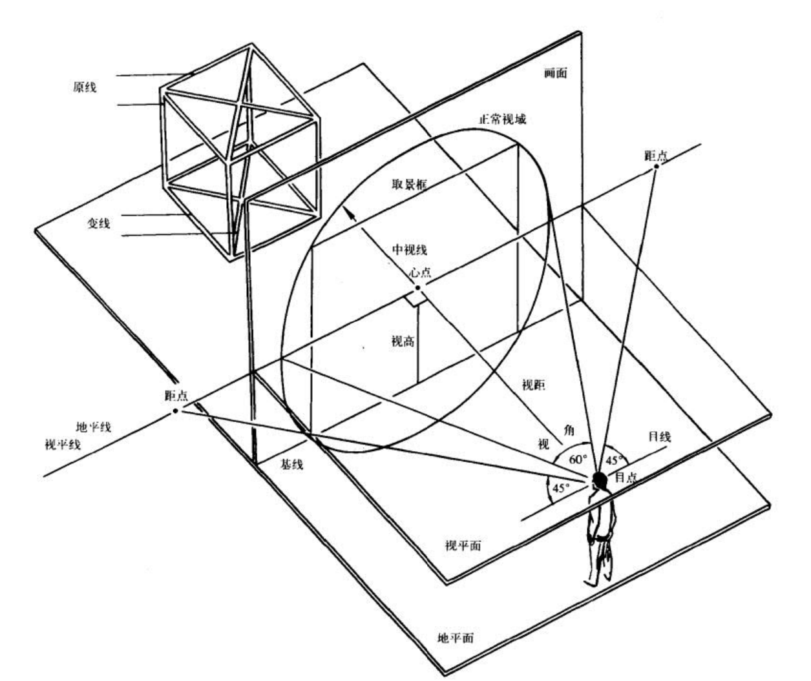
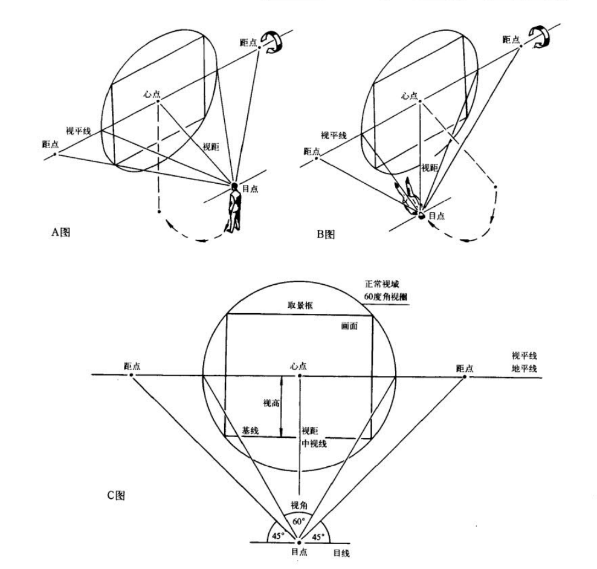
这里辨析一下术语（来自美术卷《透视》第 26 页）：
- 这里的 90 度 FOV 圆，称作 90 度视圈，而 60 度 FOV 圆则称为 60 度视圈，认为 60 度视圈是正常视域范围。视圈的圆心叫心点，它通常是画面中心。
- 90 度视圈左右的点称为距点，下方的点称为目点；心点和距点的距离（实际上是心点到目点的距离）称为视距。注意目点相对于 60 度 FOV 的距离——目点到心点的距离是 60 度视圈半径的 $\sqrt {3}$ 倍，约等于 1.7 倍，但实际操作的时候使用 2 倍也没问题（这时候实际上对应的是 53 度视圈）
这里说心点通常是画面中心，但也有不是的情况，比如绘制有俯仰角的建筑物时，这时候不想引入三点透视，仍然在两点透视的上下文上工作，这时候心点就必不是画面中心——心点此时在地平线上而非视平线上，或者也可以认为是对原始画面进行了裁切。
后面均以 60 度视圈为出发点，let’s practice。
得到其他 FOV 的视圈
要根据 60 度 FOV 得到其它 FOV，这是一个简单的平面几何问题：
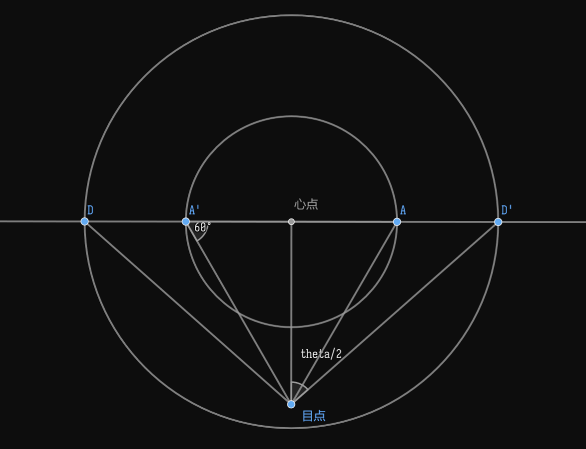
下图中，较小的圆是 60 度视圈，较大的圆是要得到的视圈，theta（即 $\theta$）是视圈的 FOV，注意到，设 60 度视圈的半径为 $d$，则心点-目点长度为 $\sqrt{3} d$，设所求 FOV 视圈的半径 x，则有：
也就是说：
也就是说：
因此，确定半径后，能够得到 FOV（因此能够得到等效焦距）；确定 FOV 后就能够得到半径。这让能够知晓绘制的图像是什么焦距的，也能让先确定焦距再绘制图像。
验证一下，$\theta = 90^\circ, x = \sqrt{3} d \tan 45^\circ = \sqrt{3} d$，这是符合认知的——心点到目点的距离等于心点到距点的距离。
下面使用 matplotlib 绘制各典型焦距的 FOV 圆，这个可以在脑子里留下一个印象，因为它的比例是绝对的。
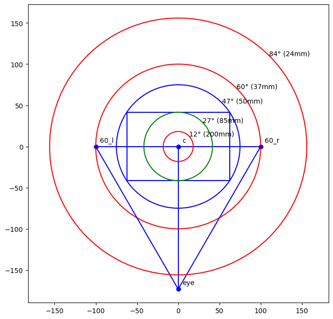
1 | |
实践：绘制两点透视立方体
接下来真正地来做点实践吧。一个典型问题——要画一个特定角度的两点透视的立方体，我现在已经画了一个面（因此得到了一个消失点），现在我该怎么得到另一个消失点？
继续从俯视图的心智模型出发——对一个两点透视的立方体，我可以用左手指向它的左侧面的顶边底边平行，然后让右手垂直于左手，这时候右手的方向就是另一个侧面的顶边底边的方向，右手和画布的交点就是右消失点。
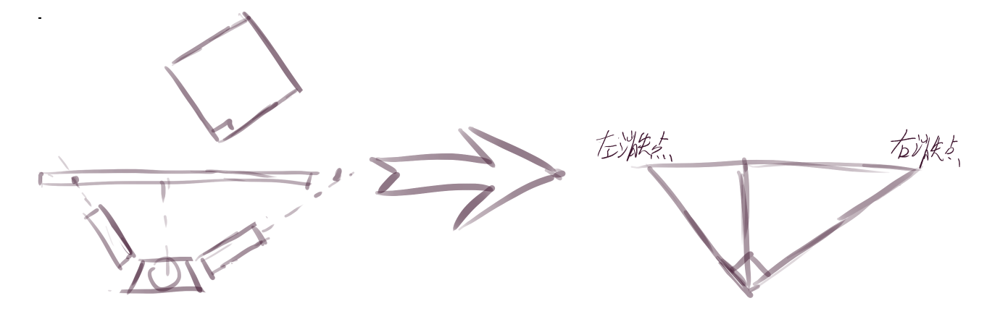
注意到，无论画布如何移动，左消失点和右消失点的比例是恒定的，因为画布可以任意移动，那我把这里的画布和之前研究视圈时的画布放一起也是可以的，实际上我们就这么操作：
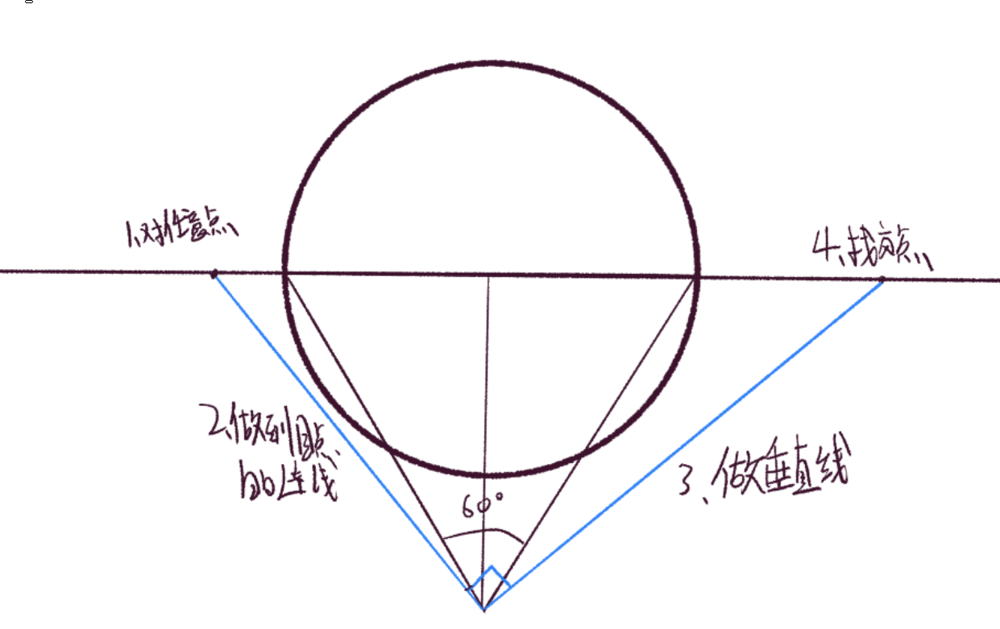
这样，对任意一个消失点，就能退出另一个消失点。下面检查它看起来是否合理：
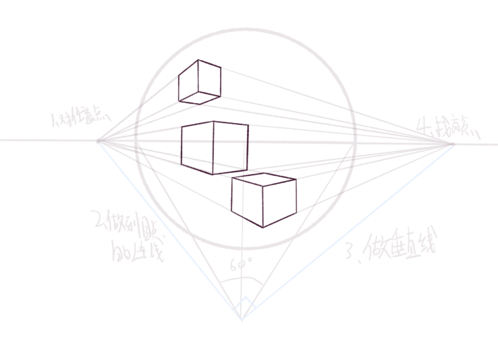
还好，应该是我没画准。注意到较靠近视圈边缘的地方仍旧有很大的畸变。
最后，我想绘制一个旋转特定角度的立方体如何解决？容易发现，两个消失点距画面中心的距离的比例会决定立方体旋转的角度，实际上以前研究的时候得到过一个公式：
一个立方体沿 Z 轴逆时针旋转时，设旋转角度为$\theta$，两个消失点距离画面中心线（垂直二分画面的线）为$x$和$y$，有$x:y=tan^2\theta$
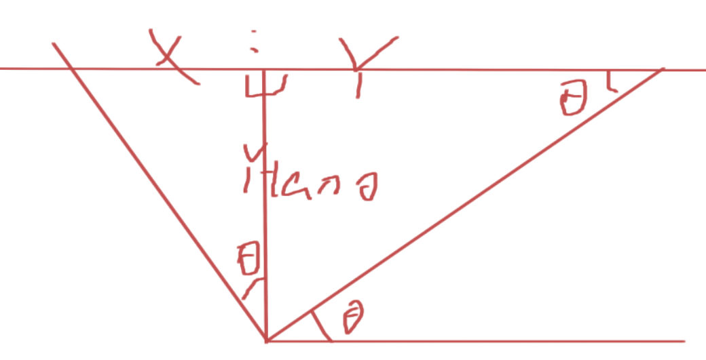
各角度消失点位置
但其实可以更机械一些——为何一定要找到目点呢？我可以直接在视平线上标注各角度的消失点，然后用的时候直接取就行了！这让我不止能够绘制立方体，棱柱也能绘制了（虽然不会这么干）。下面尝试绘制各典型角度的消失点，包括 15 度，30 度，45 度，60 度，75 度的。
1 | |
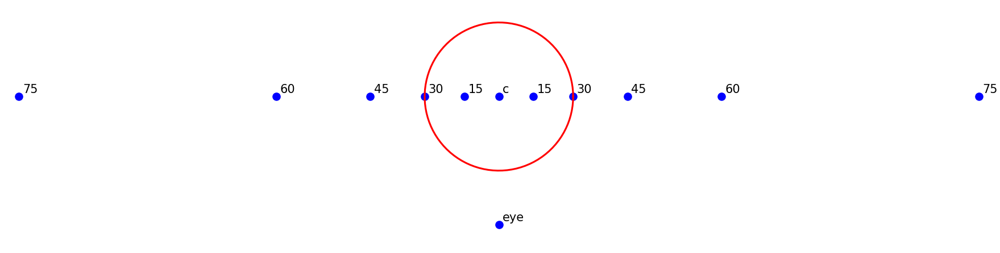
注意到：
- 10 度消失点（即 20 度视圈）约为 30 度消失点的 0.3 倍
- 15 度消失点（即 30 度视圈）约为 30 度消失点的 0.5 倍
- 30 度消失点约为 30 度消失点的 1 倍
- 45 度消失点约为 30 度消失点的 1.7 倍（反之，30 度消失点约为 45 度消失点的 0.6 倍）
- 60 度消失点约为 30 度消失点的 3 倍
- 75 度消失点约为 30 度消失点的 6 倍
- 80 度消失点约为 30 度消失点的 10 倍
可见，只有 30-60 度消失点的距离还算是容易画出来和看出来的，消失点如果更远，作图就困难了，而此时很小的角度变化就能引起消失点很大的变动，这时候或许不需要那么在意精确度，画成近似一点透视亦可，言之有理即可。
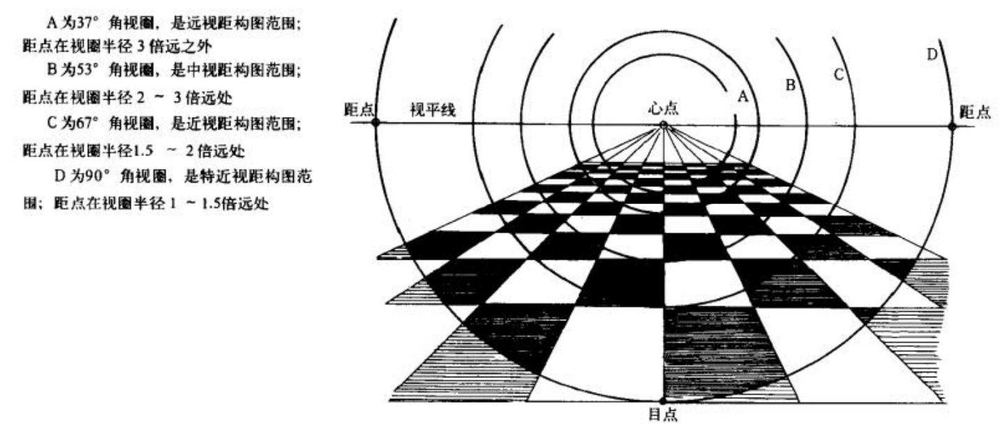
之前的学习中，我发现，一个消失点在这里时，另一个消失点可以在画面中心另一侧的任何地方。然而，在两点透视时，确定这两个消失点无法确定心点和目点，从而无法确定焦距，三点透视时则可以确定心点（三个消失点组成的三角形的垂心），从而能够确认距点到心点的距离，从而能够得到 90 度视圈。
设距点距心点距离为 d，物体左消失点距目点距离为 x，右消失点距目点距离为 y，有 $xy=d^2$。
本博客所有文章除特别声明外，均采用 CC BY-NC-SA 4.0 协议 ，转载请注明出处！